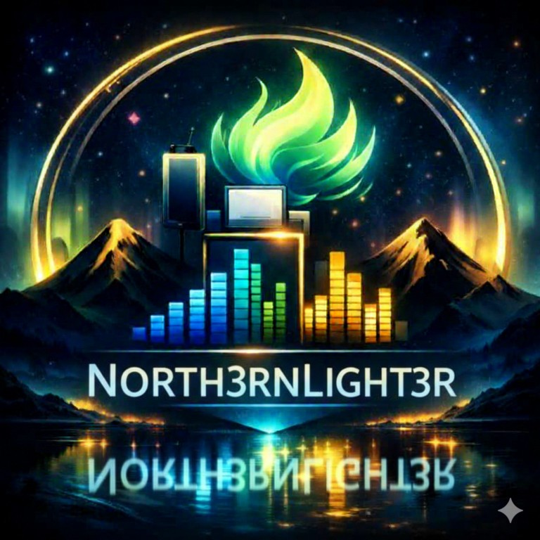

Mix decisions without guesswork
AIFRED listens for the move your mix is asking you to make.
Built by North3rnLight3r for producers who need a clean read: tone, stereo, loudness, dynamics, reference alignment, and a ranked fix list in one VST3 window.

AIFRED VST3
The Halo turns raw mix behavior into one readable decision.
AIFRED is not a decorative meter. The Halo scores alignment across tone, stereo, loudness, and dynamics, then explains the strongest cause before the session drifts.
AIFRED VST3 Distribution
Windows first, with macOS and Arch Linux packages published from verified release builds.
North3rnLight3r Beat Catalog
Preview the catalog. License the record-ready ideas.
The player uses the audio already packaged with this site. No dead buttons, no ghost catalog.
Now playing
Select a beat
BPM and style will appear here.
Mix intelligence services
Bring the same diagnostic language into your release decisions.
Book focused feedback for tone balance, stereo translation, low-end cleanup, vocal placement, and pre-master readiness. The goal is not more notes. The goal is the next correct move.
Ask Aifred
Use OpenAI or Ollama from backend configuration.
The site does not store model keys in browser code. The backend decides whether the configured provider is OpenAI or Ollama and returns a focused answer.
Model route not checked yet.
Licensing and support